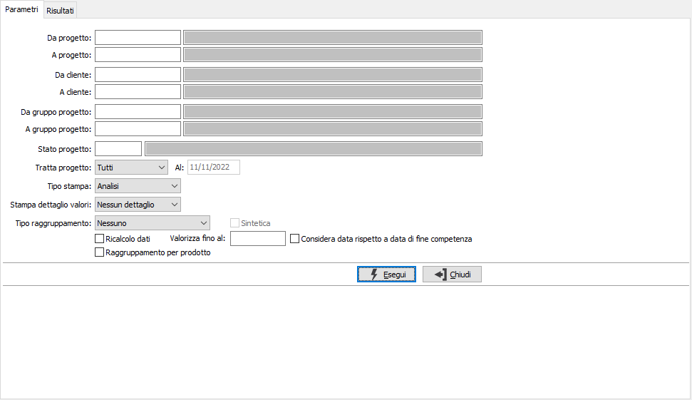
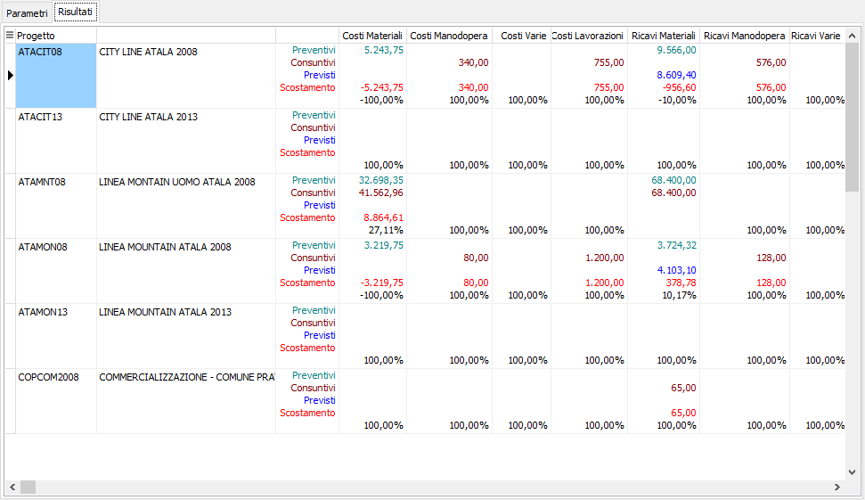
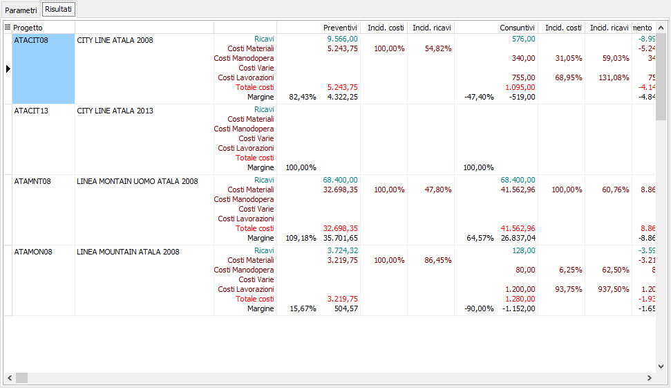
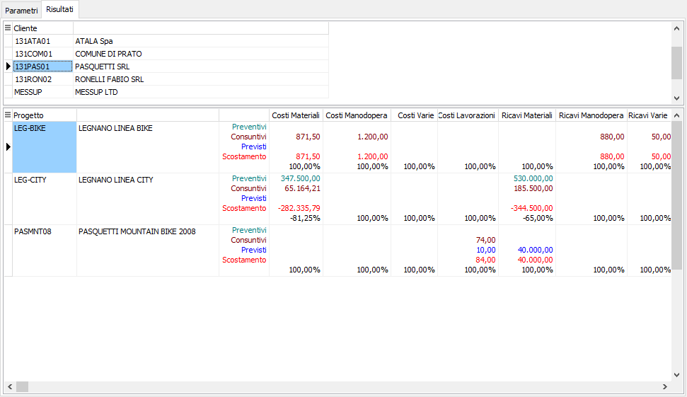
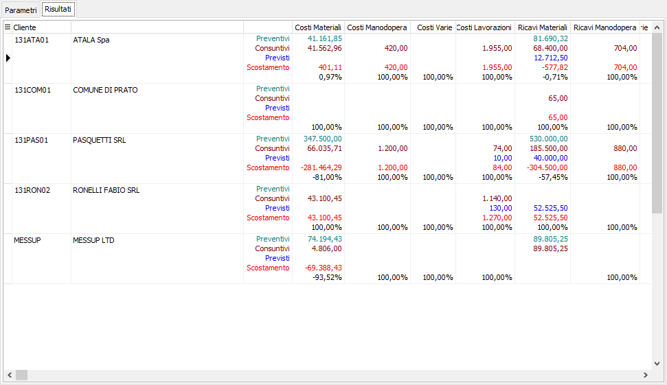

Analisi progetti
Il programma riporta a video e stampa lo schema completo derivante dalla valorizzazione dei progetti.
è possibile ottenere un risultato di tipo analisi, che riporta semplicemente i valori del progetto ed un risultato di tipo “rendiconto”, che consente di analizzare i progetti dal punto di vista della redditività e dell’incidenza degli elementi di costo sul totale dei costi e sul totale dei ricavi del progetto

DA PROGETTO: eventuale codice del progetto, presente in anagrafica Progetti, da cui si desidera iniziare la selezione dell’analisi progetti. Confermando a vuoto, la selezione inizia con il primo progetto valido. Sul campo è attiva la ricerca (F9) sull’anagrafica progetti.
A PROGETTO: eventuale codice del progetto, presente in anagrafica Progetti, a cui si desidera terminare la selezione dell’analisi progetti. Confermando a vuoto, la selezione termina con l’ultimo valido. Sul campo è attiva la ricerca (F9) sull’anagrafica progetti.
DA CLIENTE: codice del cliente, presente in anagrafica, da cui si vuole iniziare la selezione dell’analisi progetti. Confermando a vuoto, la selezione inizia dal primo cliente valido. Sul campo sono attive le funzioni di ricerca (F9).
A CLIENTE: codice del cliente, presente in anagrafica, con cui si vuole terminare la selezione dell’analisi progetti. Confermando a vuoto, la selezione termina con l'ultimo cliente valido. Sul campo sono attive le funzioni di ricerca (F9).
DA GRUPPO PROGETTO: eventuale codice del gruppo progetto, presente in anagrafica Gruppi progetti, da cui si desidera iniziare la selezione dell’analisi progetti. Confermando a vuoto, la selezione inizia con il primo progetto valido. Sul campo è attiva la ricerca (F9) sull’anagrafica progetti.
A GRUPPO PROGETTO: eventuale codice del gruppo progetto, presente in anagrafica Gruppi progetti, a cui si desidera terminare la selezione dell’analisi progetti. Confermando a vuoto, la selezione termina con l’ultimo valido. Sul campo è attiva la ricerca (F9) sull’anagrafica progetti.
STATO PROGETTO: eventuale codice dello stato progetto, dato presente in anagrafica progetti, per cui si desidera effettuare la selezione dei progetti da analizzare. Sul campo è attiva la ricerca (F9) sulla tabella.
TRATTA PROGETTO: combo box per definire lo stato dei progetti che si intende analizzare. Valori ammessi: Tutti, Aperto, Chiuso oppure Sospeso.
AL: collegata al campo precedente; indica la data in cui il progetto risulta nello stato indicato; il campo è attivo solo per gli stati Aperto e Chiuso.
TIPO STAMPA: definisce il tipo di report da stampare: analisi o rendiconto.
STAMPA DETTAGLIO VALORI: il parametro è valido solo se gestito il dettaglio dei valori in configurazione e definisce se e quali dettagli riportare in analisi: nessun dettaglio, dettaglio completo, solo costi o solo ricavi.
TIPO RAGGRUPPAMENTO: combo box per definire il tipo di raggruppamento da effettuare nell'analisi: Nessuno; Per cliente; Per gruppo progetto; Per cliente/gruppo progetto.
SINTETICA: check box attivo nel caso di tipo raggruppamento diverso da nessuno, per poter effettuare la stampa sintetica o analitica dei progetti.
RICALCOLO DATI: se spuntato prima di effettuare la stampa effettua il ricalcolo di tutti i progetti nei limiti dei criteri di selezione specificati.
VALORIZZA FINO AL: se il campo contiene una data valida sarà effettuato il ricalcolo dei valori considerando tutte le operazioni fino alla data inserita e saranno stampati i valori così calcolati; in questo caso i risultati del calcolo non saranno utilizzati per aggiornare i valori progetti che rimarranno inalterati.
Considera data rispetto a data di fine competenza: utilizzato solo quando è presente l'elaborazione alla data; se attivo, per calcolare i valori di costi consuntivi manodopera, varie e lavorazioni che derivano da fatture passive la data viene controllata con la data di fine competenza presente sul rigo del documento; per quanto riguarda i movimenti progetti il controllo viene eseguito per i progetti che derivano da prima nota contabile utilizzando la data di fine competenza presente sul rigo contabile collegato.
RAGGRUPPAMENTO PER PRODOTTO: il parametro è valido solo attiva la stampa del dettaglio valori e definisce (se spuntato) di effettuare un raggruppamento dei dettagli per prodotto.
Una volta inseriti i parametri di selezione e premuto il bottone esegui viene mostrata la pagina dei risultati dove la visualizzazione può cambiare a seconda del tipo di stampa, del tipo raggruppamento e del fatto che l'analisi, se raggruppata, sia analitica o sintetica; utilizzando i pulsanti Anteprima e Stampa della toolbar è possibile effettuare la stampa; seguono alcuni esempi.
Analisi

Rendiconto

Analisi raggruppata analitica

Analisi raggruppata sintetica
